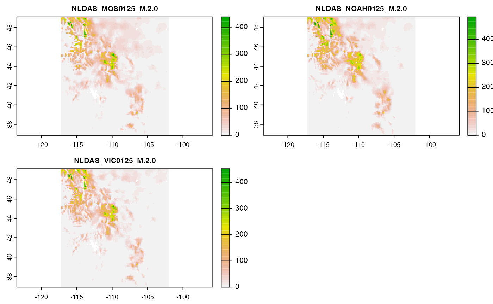
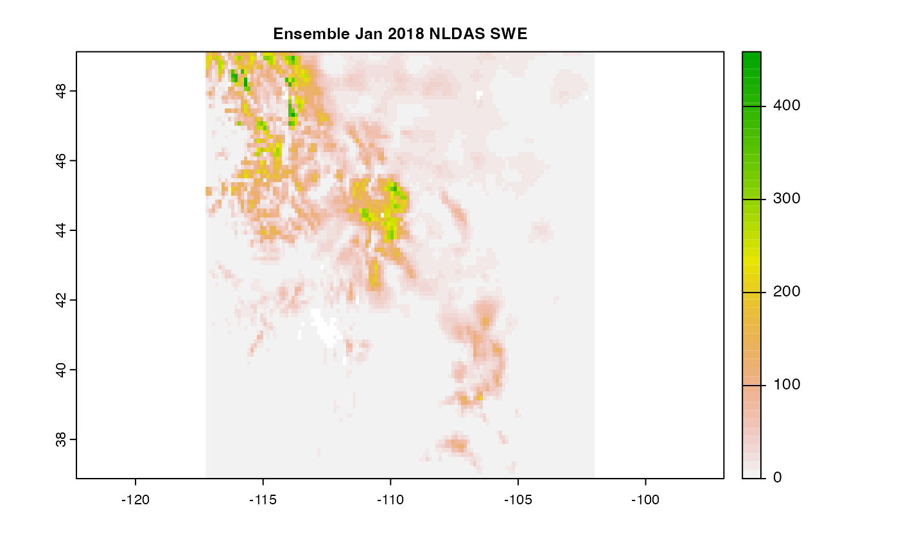
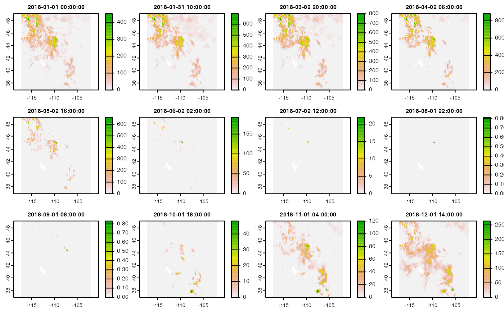

As of 03/2022, there are 14,160 web resources documented in the catalog.
This offers too many resources to search through by hand unless you know exactly what you want which voids the possibility of serendipitous discovery. So, we have added a generally fuzzy search tool to help discover datasets.
Say we want to find what snow water equivalent data (SWE) is available for a research problem. We can search the catalog on that key word:
(swe = search("swe"))
#> # A tibble: 188 × 16
#> id grid.id URL tiled variable varname long_name units model ensemble
#> <chr> <chr> <chr> <chr> <chr> <chr> <chr> <chr> <chr> <chr>
#> 1 bcsd_vic 170 https… "" swe NA NA mm acce… r1i1p1
#> 2 bcsd_vic 170 https… "" swe NA NA mm acce… r1i1p1
#> 3 bcsd_vic 170 https… "" swe NA NA mm bcc-… r1i1p1
#> 4 bcsd_vic 170 https… "" swe NA NA mm bcc-… r1i1p1
#> 5 bcsd_vic 170 https… "" swe NA NA mm bcc-… r1i1p1
#> 6 bcsd_vic 170 https… "" swe NA NA mm bcc-… r1i1p1
#> 7 bcsd_vic 170 https… "" swe NA NA mm bcc-… r1i1p1
#> 8 bcsd_vic 170 https… "" swe NA NA mm bcc-… r1i1p1
#> 9 bcsd_vic 170 https… "" swe NA NA mm cane… r1i1p1
#> 10 bcsd_vic 170 https… "" swe NA NA mm cane… r1i1p1
#> # … with 178 more rows, and 6 more variables: scenario <chr>, T_name <chr>,
#> # duration <chr>, interval <chr>, nT <int>, rank <dbl>In total there are 188 resources available across 8 data sets. Viewing even a reduced catalog can still be onerous so a search summary is provided.
search_summary can be applied to any catalog object, but is meant for those reduced with search. It groups resources by ID and varname in order to consolidate the number of resources that are generated from many model/ensemeble/scenario runs (e.g. count)
search("swe") |>
search_summary()
#> id
#> 1 WW3_72_GulfOfMaine_latest
#> 2 ioos_eds_bcda_f66b_b571
#> 3 ioos_eds_cabf_1568_9301
#> 4 ioos_eds_bcda_f66b_b571
#> 5 ioos_eds_cabf_1568_9301
#> 6 NLDAS
#> 7 vic
#> 8 GLDAS
#> 9 GLDAS
#> 10 IMI_EATL_WAVE
#> long_name
#> 1 significant height of wind and swell waves
#> 2 Significant height of combined wind waves and swell @ Ground or water surface
#> 3 Significant height of combined wind waves and swell @ Ground or water surface
#> 4 Significant height of swell waves @ Ground or water surface
#> 5 Significant height of swell waves @ Ground or water surface
#> 6 snow water equivalent [kg m-2]
#> 7 snow water equivalent
#> 8 ** snow depth water equivalent [kg m-2]
#> 9 ** snow depth water equivalent [kg m-2]
#> 10 swell significant wave height
#> variable count
#> 1 hs 1
#> 2 Significant_height_of_combined_wind_waves_and_swell_surface 1
#> 3 Significant_height_of_combined_wind_waves_and_swell_surface 1
#> 4 Significant_height_of_swell_waves_surface 1
#> 5 Significant_height_of_swell_waves_surface 1
#> 6 swe 6
#> 7 SWE 60
#> 8 swe_inst 16
#> 9 swe_tavg 2
#> 10 swell_wave_height 2This shows us more clearly the data sets and variables available. Importantly, count references number of variable data sets within each id/variable pair.
Say looking through the returned results that we know NLDAS produces SWE measures we can expand the search to look for ‘NLDAS swe’, or ‘swe NLDAS’.
search("swe NLDAS")
#> # A tibble: 6 × 16
#> id grid.id URL tiled variable varname long_name units model ensemble
#> <chr> <chr> <chr> <chr> <chr> <chr> <chr> <chr> <chr> <chr>
#> 1 NLDAS 166 https://h… "" swe swe "snow wa… kg m… MOS0… NA
#> 2 NLDAS 166 https://h… "" swe swe "snow wa… kg m… MOS0… NA
#> 3 NLDAS 166 https://h… "" swe swe "snow wa… kg m… NOAH… NA
#> 4 NLDAS 166 https://h… "" swe swe "snow wa… kg m… NOAH… NA
#> 5 NLDAS 166 https://h… "" swe swe "snow wa… kg m… VIC0… NA
#> 6 NLDAS 166 https://h… "" swe swe "snow wa… kg m… VIC0… NA
#> # … with 6 more variables: scenario <chr>, T_name <chr>, duration <chr>,
#> # interval <chr>, nT <int>, rank <dbl>The result is that we see NLDAS has three models (VIC, NOAH, and MOSAIC) as well as two time horizons (M and H). We can continue to narrow from there!
Say we want monthly SWE for 2018 along the Rocky Mountain corridor. We found NLDAS to be a good source and want to look at how the models compare in January:
swe = dap(catolog = search("month swe NLDAS"),
AOI = AOI::aoi_get(state = c("CO", "UT", "ID", "MT", "WY")),
startDate = "2018-01-01")
#> source: https://hydro1.gesdisc.eosdis.nasa.gov/dods/NLDAS_MOS0125_M....
#> tiles: 3 tiles
#> varname(s):
#> > swe [kg m-2] (snow water equivalent [kg m-2] )
#> ==================================================
#> diminsions: 122, 98, 1 (names: lon,lat,time)
#> resolution: 0.125, 0.125, 1 months
#> extent: -117.25, -102, 36.88, 49.12 (xmin, xmax, ymin, ymax)
#> crs: +proj=longlat +a=6378137 +f=0.00335281066474748 +p...
#> time: 2018-01-01 to 2018-01-01
#> ==================================================
#> values: 11,956 (vars*X*Y*T)

Alternatively, say you wanted one year of monthly data from just the VIC model. All you would need to do is refine your search:
swe = dap(catolog = search("month swe NLDAS VIC"),
AOI = AOI::aoi_get(state = c("CO", "UT", "ID", "MT", "WY")),
startDate = "2018-01-01",
endDate = "2018-12-31")
#> source: https://hydro1.gesdisc.eosdis.nasa.gov/dods/NLDAS_VIC0125_M....
#> varname(s):
#> > swe [kg m-2] (snow water equivalent [kg m-2] )
#> ==================================================
#> diminsions: 122, 98, 13 (names: lon,lat,time)
#> resolution: 0.125, 0.125, 1 months
#> extent: -117.25, -102, 36.88, 49.12 (xmin, xmax, ymin, ymax)
#> crs: +proj=longlat +a=6378137 +f=0.00335281066474748 +p...
#> time: 2018-01-01 to 2019-01-01
#> ==================================================
#> values: 155,428 (vars*X*Y*T)